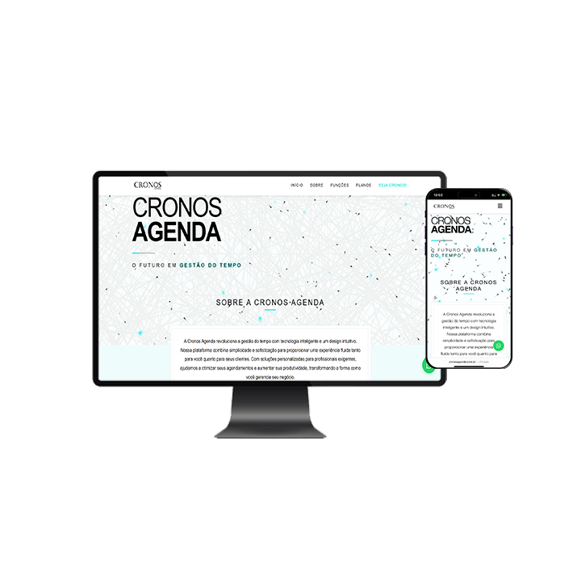

Portfólio
Cronos Website
Site institucional da Cronos desenvolvido em página única, com foco em apresentação de serviços e SEO além de um visual moderno e responsividade adequada.
Cronos Agenda

Sistema de agendamento online para barbearias e salões, com painel administrativo e notificações, integração com api de disparo de mensagens no whatsapp e webhooker para atualizações em tempo real no painel.